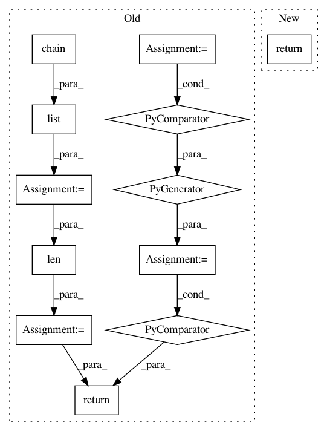

b0adc22179a036abeecb79424ba94df64e052e9b,pytext/data/bert_tensorizer.py,BERTTensorizerBase,numberize,#BERTTensorizerBase#Any#,338
Before Change
sentences = [self._lookup_tokens(row[column])[0] for column in self.columns]
sentences = self._wrap_numberized_text(sentences)
seq_lens = (len(sentence) for sentence in sentences)
segment_labels = ([i] * seq_len for i, seq_len in enumerate(seq_lens))
tokens = list(itertools.chain(*sentences))
segment_labels = list(itertools.chain(*segment_labels))
seq_len = len(tokens)
positions = list(range(seq_len))
// tokens, segment_label, seq_len
return tokens, segment_labels, seq_len, positions
def tensorize(self, batch) -> Tuple[torch.Tensor, ...]:
Convert instance level vectors into batch level tensors.
After Change
per_sentence_tokens = [
self.tokenizer.tokenize(row[column]) for column in self.columns
]
return self.tensorizer_script_impl.numberize(per_sentence_tokens)
def tensorize(self, batch) -> Tuple[torch.Tensor, ...]:
Convert instance level vectors into batch level tensors.
In pattern: SUPERPATTERN
Frequency: 3
Non-data size: 12
Instances
Project Name: facebookresearch/pytext
Commit Name: b0adc22179a036abeecb79424ba94df64e052e9b
Time: 2019-12-17
Author: chenyangyu@fb.com
File Name: pytext/data/bert_tensorizer.py
Class Name: BERTTensorizerBase
Method Name: numberize
Project Name: facebookresearch/pytext
Commit Name: eba7183bd6fd90dd15c5daa260a836c64682018c
Time: 2019-12-19
Author: chenyangyu@fb.com
File Name: pytext/data/bert_tensorizer.py
Class Name: BERTTensorizerBase
Method Name: numberize
Project Name: deepmipt/DeepPavlov
Commit Name: 0066f83bc6f9f3861119db2593c3007796d2056c
Time: 2018-08-30
Author: mary.vikhreva@gmail.com
File Name: deeppavlov/metrics/bleu.py
Class Name:
Method Name: per_item_bleu